This week was a continuation of the previous week, just this time it was supersized.
Though my model was a complete success last week, It was a bit difficult to get the middle sized slices into place, so I added an additional segment in the middle (seen below) to space things out a little better. You still have to slide the middle sized slices in at an angle, but this time they went in much easier. I also could not scale up this model linerally. It kept feeling out of proportion. Something about linerally scalling circles is not so successful, so I made additional changes until I was happy with my work.
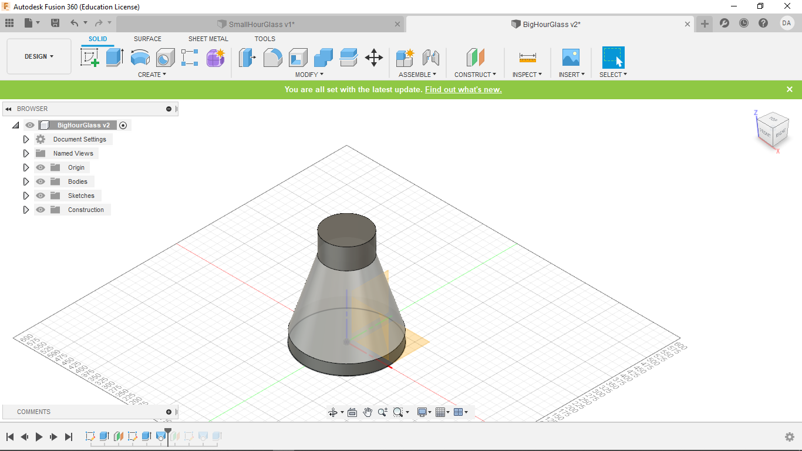After fixing my Fusion360 file, I once again used FusionSlicer to get my cut designs. See Week 6 for a full explinaion.
We were still working with the same size cardboard as last time, but with the projects being so much bigger I had to use a couple more sheets. But like before, I started by making new files of the exaxt size of the cardboard.
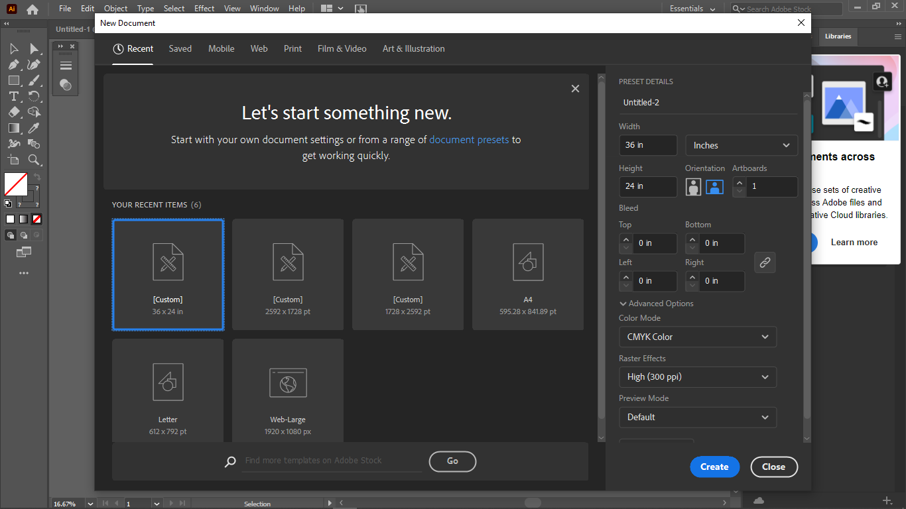Once again, after opening all of my new slicer files, I ungrouped all of the segments, the deleted the outer boarder.
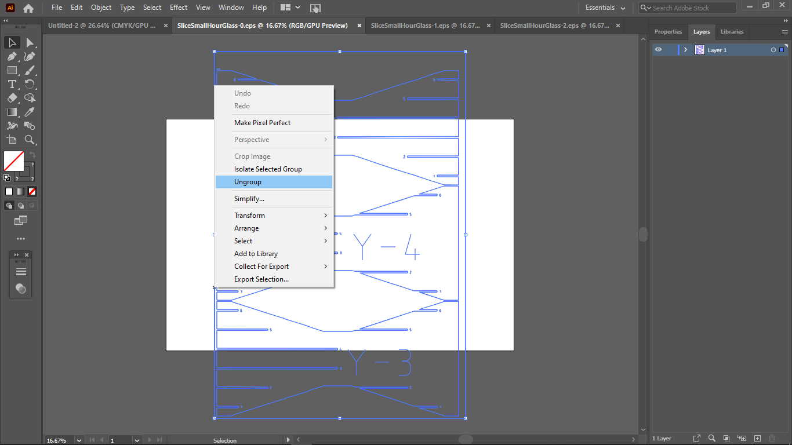Because of the odd shape of my hour glass, there was no easy way to nest these shapes, but I did my best, and out of 3 sheets, only one had a segment of scrap worth sectioning off. This can be seen below
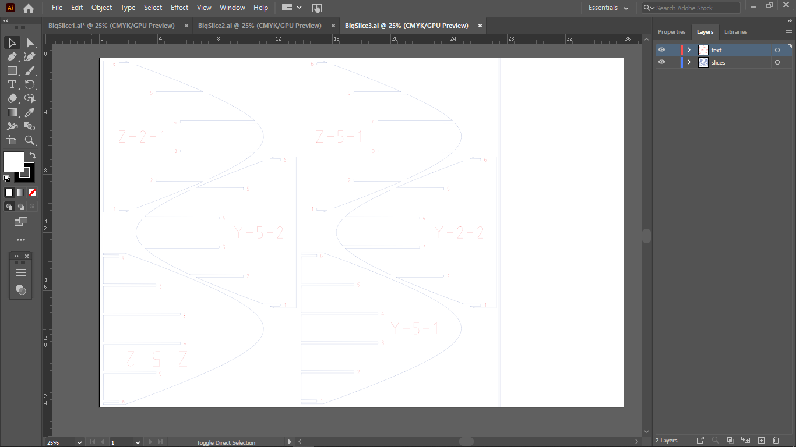Like last week, the text and the shapes were separated using the "select -> same -> stroke color" command and then moved onto two different layers.
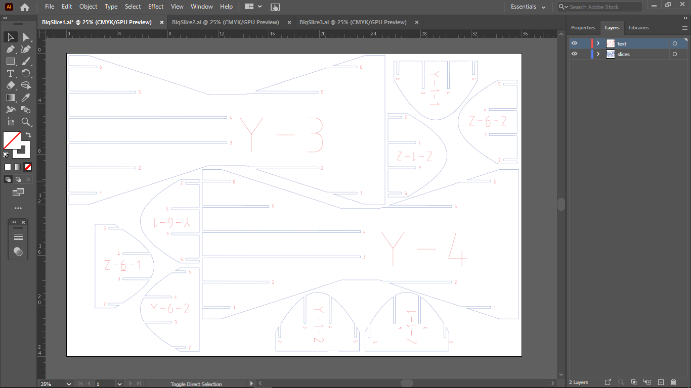Then, as always, the stroke weight of everything was set to .01 mm so that everything would cut as a vector.
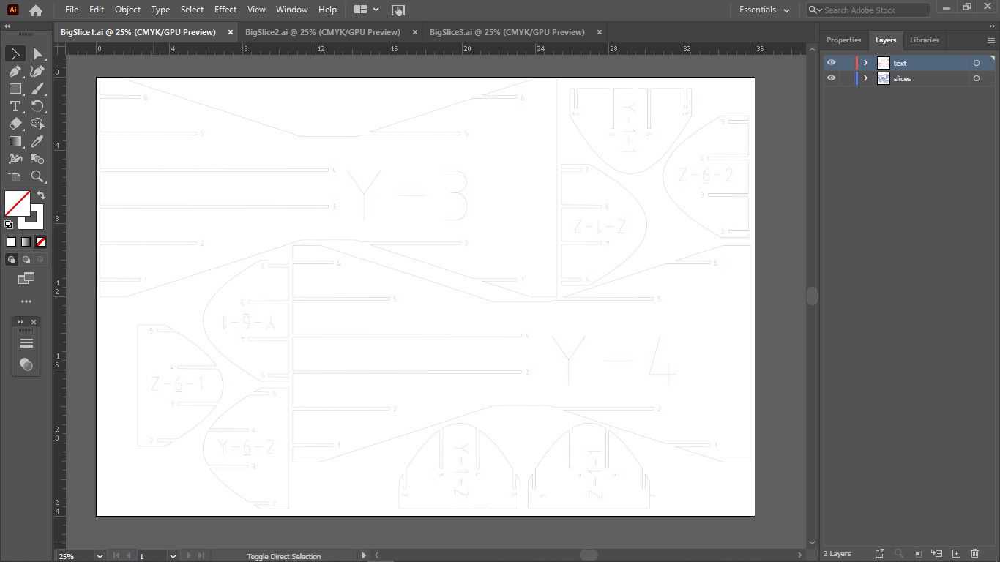I feel the need to reiterate, COVID-19 sucks. Because of COVID, I was unable to print my slices myslef. Instead, the omnipotent and multi-cosmic Madison had to will my slices into existence and transport them via telekinesis to a pick-up location.The photos of construction however are below. Again, I apologise for picture quality, but a full week later (I'd hate to ruin the illusion of time) I am still without power.
As before, I assmebled all of the pieces together and sorted by size and shape.
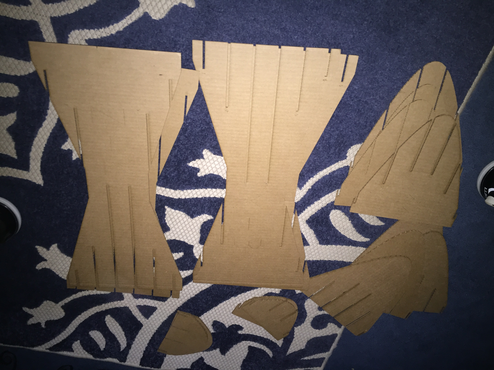Next assemble the largest segments
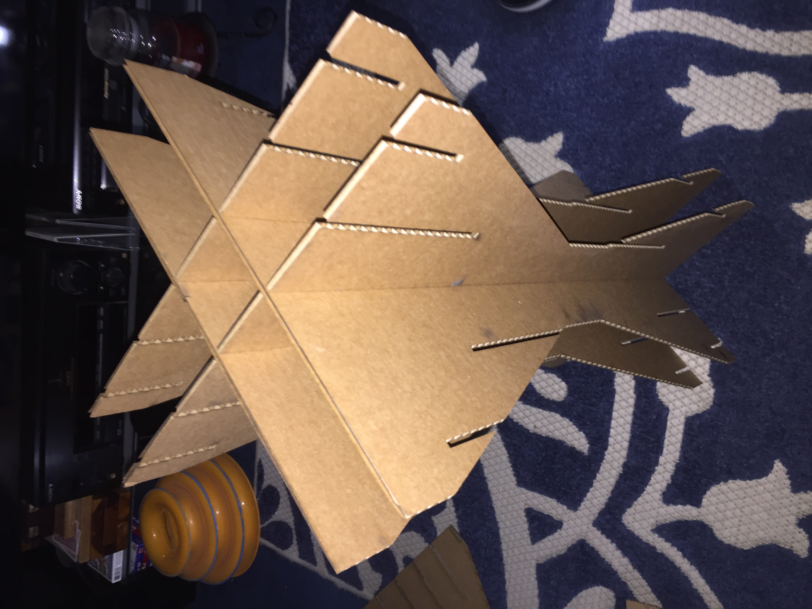Followed by the middle sized segments. Once again, these must be slid in at an angle.
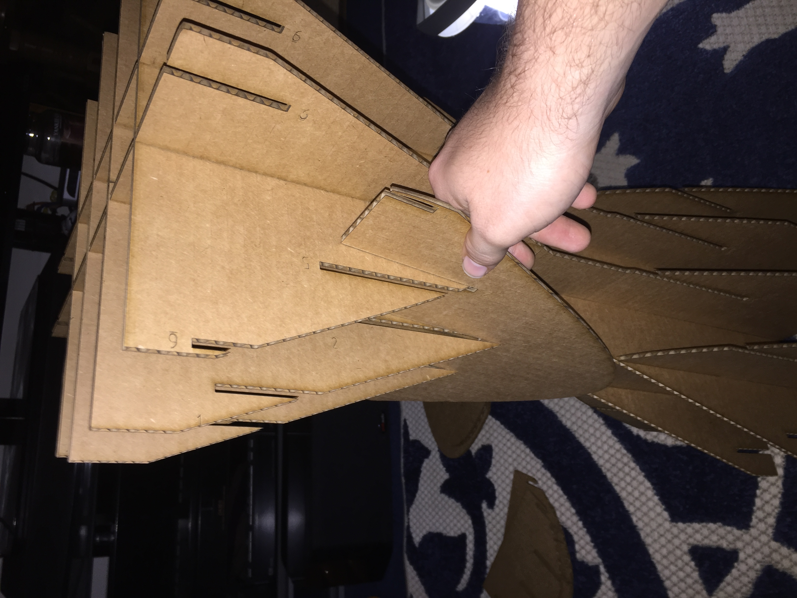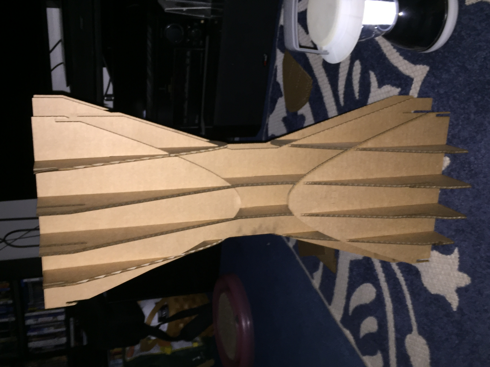
Finally complete the hour glass by inserting the smallest segments. You can also get a sense of size in the second photo
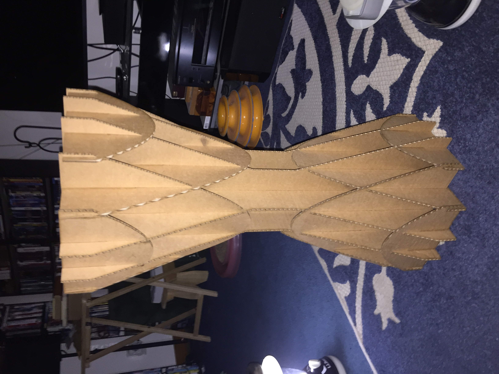 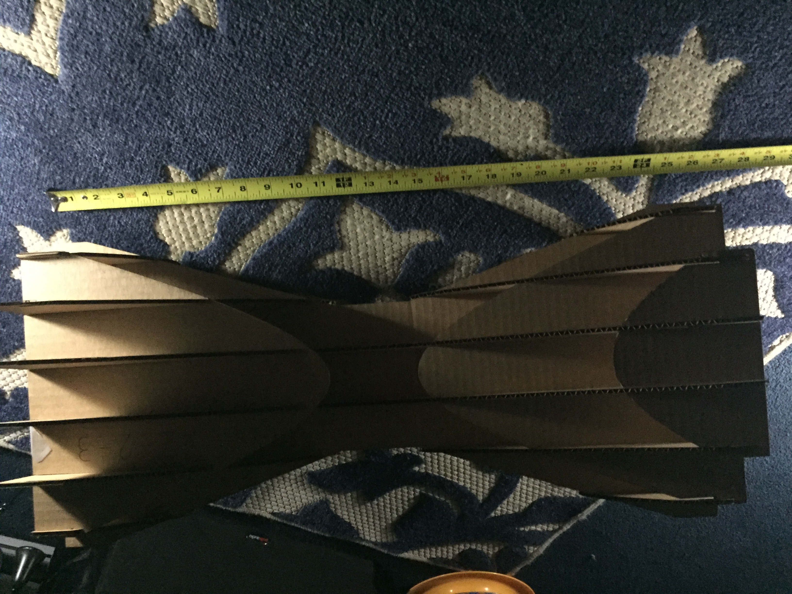Look, two weeks of work to make two good friends.
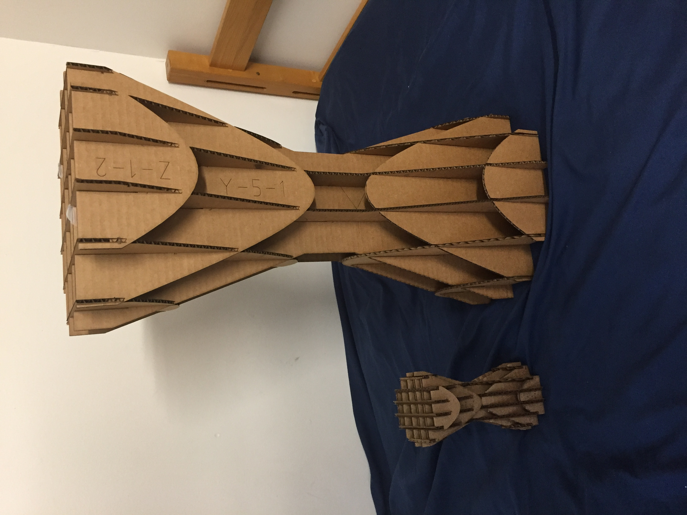My Design files for week 7 can be found here.